05 — Storyboard
Story board
From thumbnail sketches to composited frames — following two sprites who follow a treasure map a little too far.
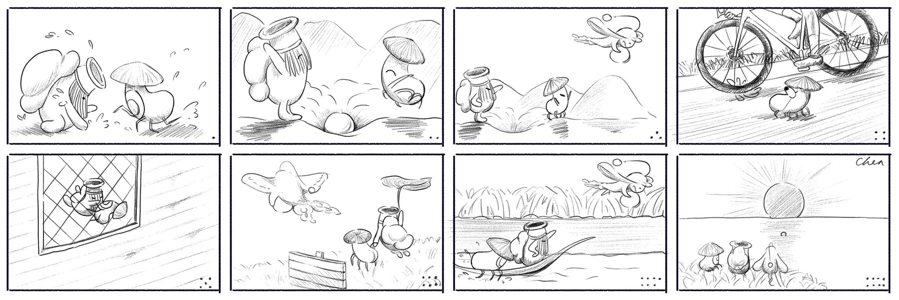
Thumbnails · pencil on paper
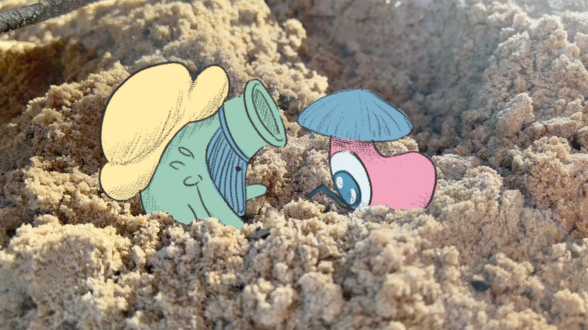
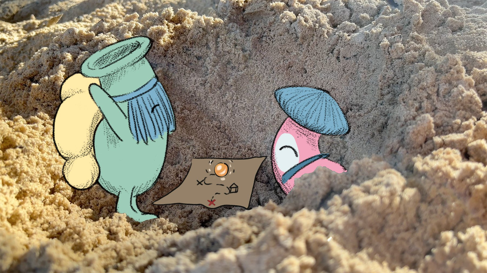
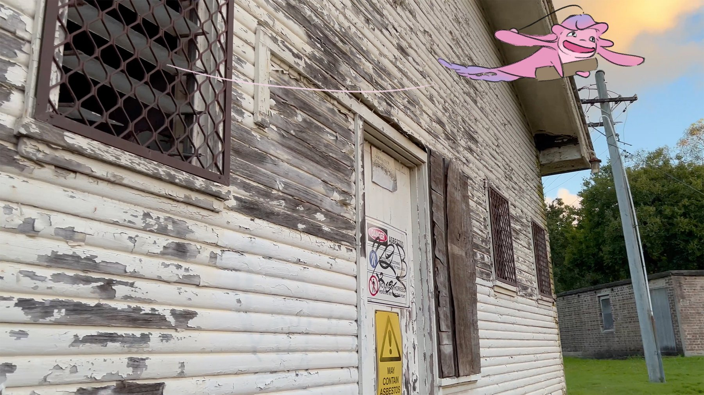
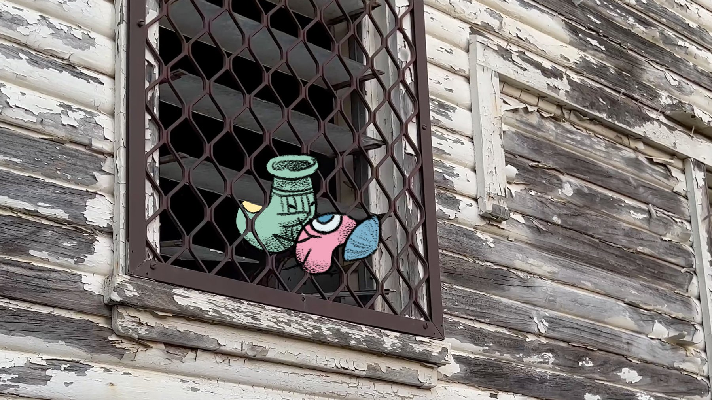
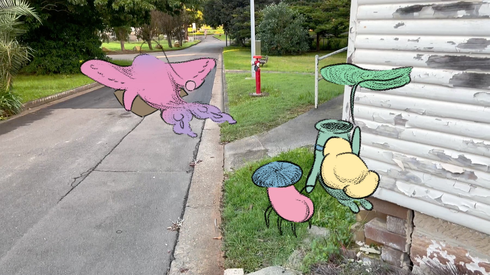
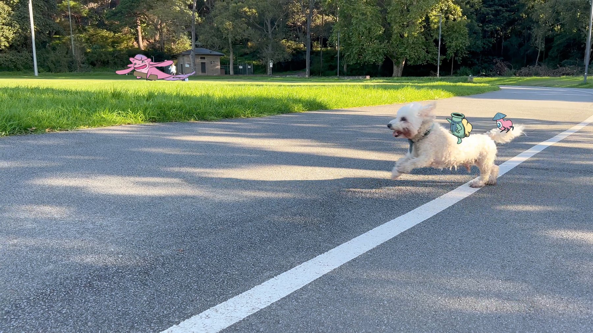
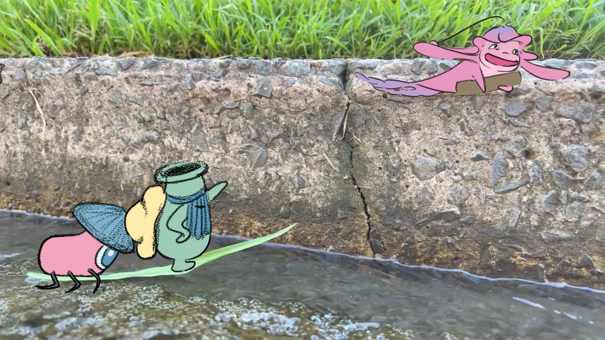
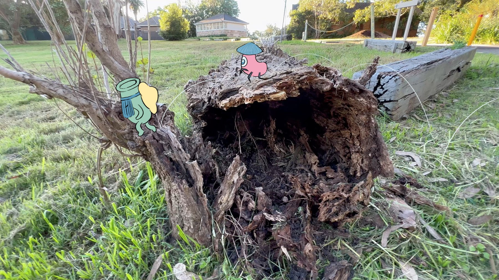
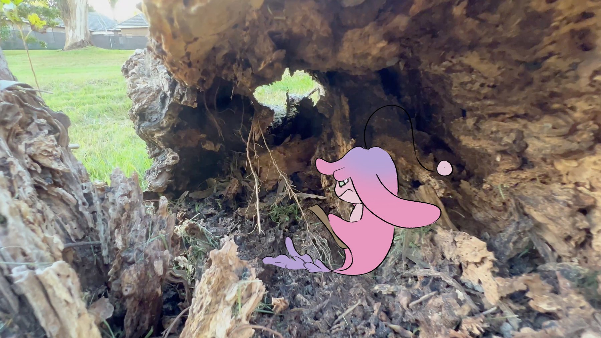
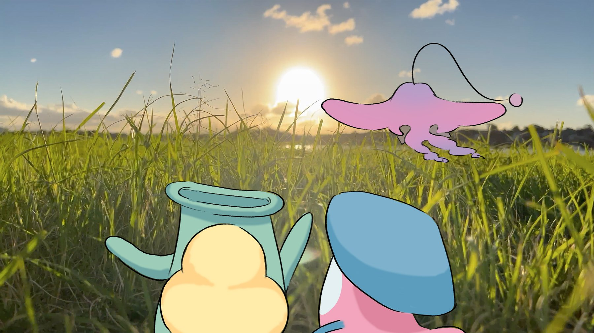
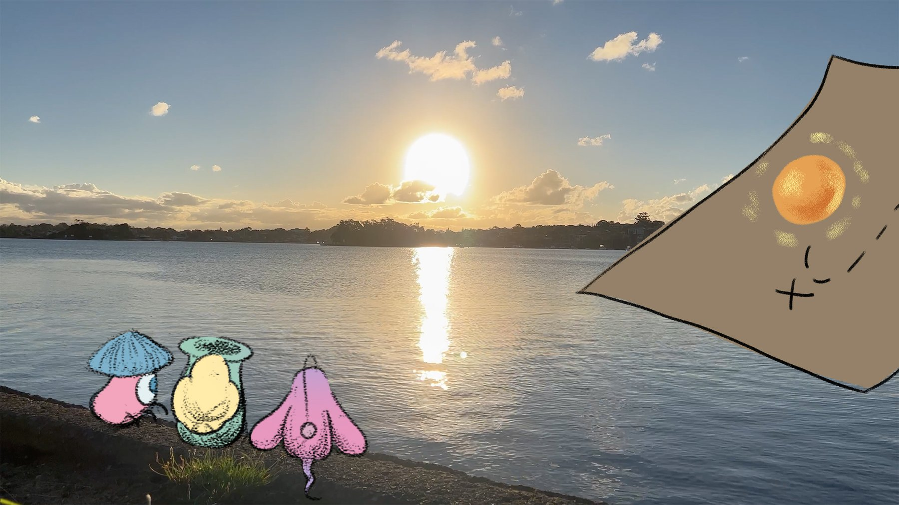
← hover edges to scroll →